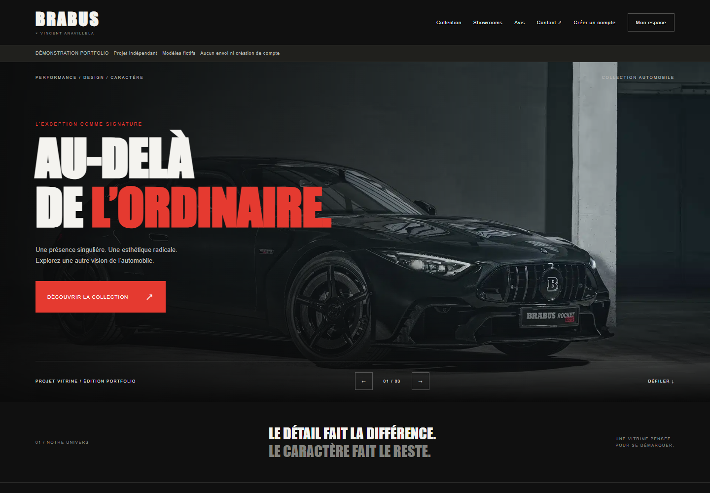

← Tous les projets01 / SITE VITRINE / PROJET PÉDAGOGIQUE
BRABUS
Créer une vitrine web pour l’univers automobile.

Le contexte
Le projet répond à la demande d’un client fictif : présenter les véhicules de la marque BRABUS à travers un site vitrine.
Le périmètre
Le cahier des charges comprend des fiches techniques, un formulaire de contact et un système d’authentification avec une page de connexion.